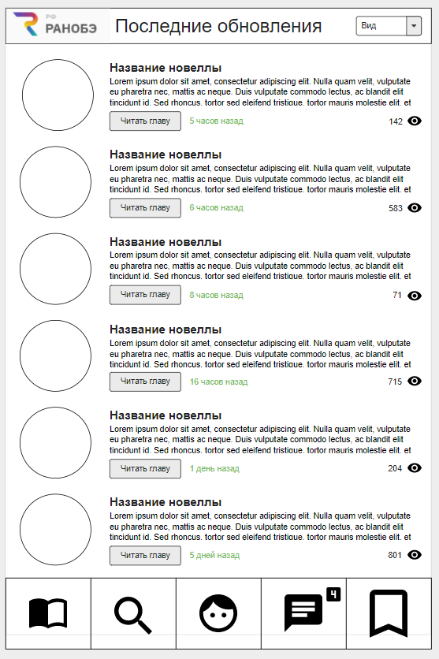

|  |
Click on E-mail or password to copy it or click on picture to open it in new tab! E-mail: milosta.vlad@gmail.com Password: vlad1401 Comment: Авторизация через кнопку Google. Click to go on Moqups.com |
Главная страницаКнопка "Вид" имеет функционал, аналогичный таковому на сайте Ранобэ.рф. Нижнее меню состоит из пяти кнопок слева направо: "Главная" - собственно наблюдаемая страница, "Поиск" - осуществляет поиск по книгам, "Личный кабинет" - если пользователь не авторизован, то показывает иконку человечка, иначе иконку пользователя (ведёт к соответствующему разделу), "Уведомления" - отображают количество новых уведомлений или ничего, если таковых нет, "Закладки" - отправляют на страницу закладок. |